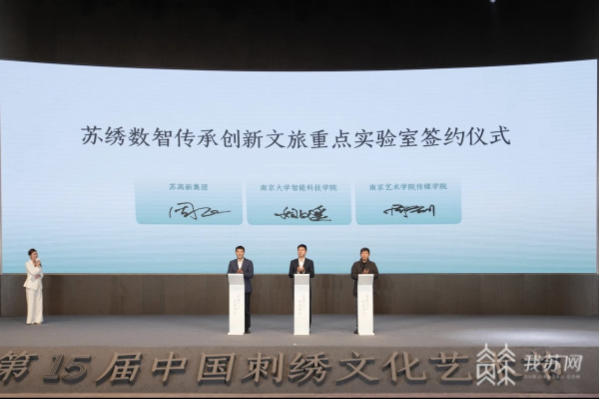

十五届中国刺绣文化艺术节开幕
12月8日，“针黹之上•绣艳湖山”第十五届中国刺绣文化艺术节在苏州高新区正式开幕，通过成果发布、项目启动、展览展示、 交流研讨等一系列活动，推动刺绣文化创造性转化、创新性发展，为区域高质量发展注入更多文化新动能。
第十五届中国刺绣文化艺术节策划了中国工艺美术协会刺绣专业委员会2023年工作会议暨引领刺绣工艺文化从传统向当代转型交流座谈会等一系列刺绣艺术交流活动， 激活非遗传承高质量发展内在动力，为文化传承与发展不断凝聚智慧和力量。
开幕式上，中国刺绣研究中心（苏州）成立，将通过举办学术论坛、开展非遗传承项目等， 促进中国刺绣的创新发展与社会发展多元融合。苏绣数智传承创新文旅重点实验室签约，将进一步推动文化科技融合、加强非遗数字化保护和产业创新发展。
现场，苏绣版权数字平台正式上线，为苏绣工匠、设计师以及艺术中介和品牌方提供“一站式”线上服务， 促进苏绣行业上下游资源整合，赋能优秀传统文化创新发展；蓝海彤翔“元宇宙里的苏作天工”、苏绣新生代创新项目、 第四届“苏绣小镇杯”文化创意设计大赛暨首届苏绣主题人工智能创意创新大赛、苏绣传承创新发展白皮书等集中推介发布，进一步推动苏绣传统工艺传承与苏绣艺术创新发展。